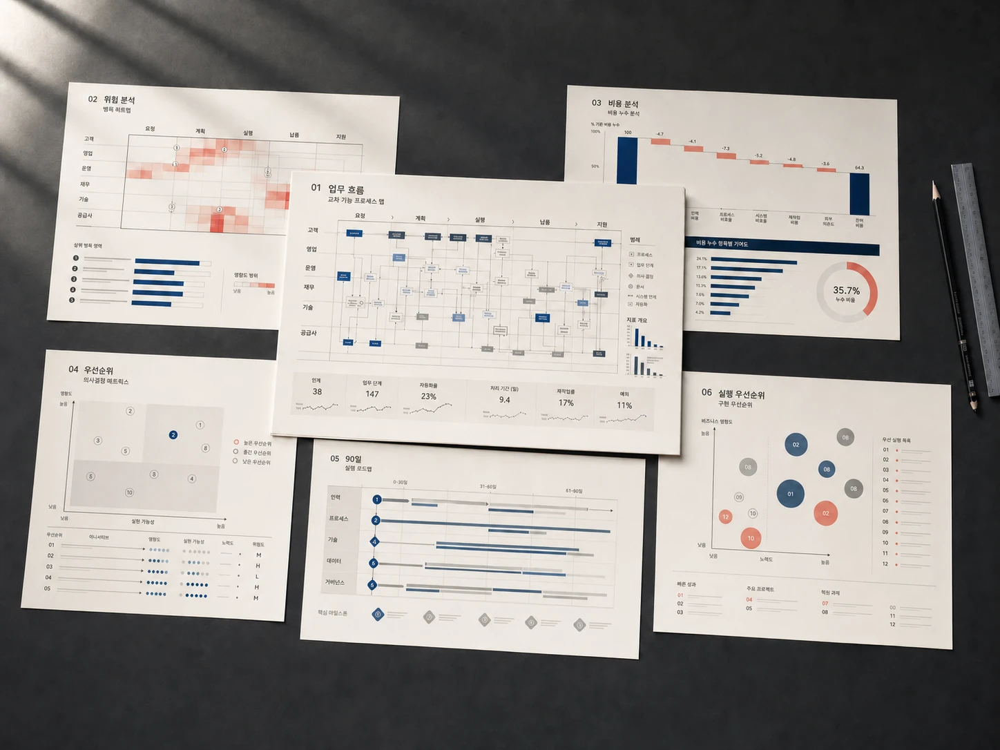

01 / BASELINE선결제 없음
3—5 영업일
절감 기준선 설정
무엇이 얼마나 줄었는지 나중에 다투지 않도록 먼저 합의합니다.- 현재 업무량·처리시간·실제 비용 확인
- 오류·재작업·외주·초과근무 비용 구조화
- 자동화 가능성과 측정 기준 합의
ALEXSOFT / PERFORMANCE AUTOMATIONSHARED SAVINGS · 2026
진단부터 구현과 현장 적용까지 먼저 함께합니다. 자동화로 실제 확인된 순절감액의 20%만 받고, 절감이 없으면 성과보수도 없습니다.
순절감액 = 기존 비용 − 개선 후 비용 − 새로 발생한 도구·API·운영 비용. 업무량과 측정 기준은 시작 전에 합의하며, 성과보수형은 절감액을 객관적으로 확인할 수 있는 업무에 한해 적용됩니다.
반복업무의 신호
특정 업종이나 도구보다, 업무가 반복되는 방식과 절감 가능성에 집중합니다. 아래 신호가 두 가지 이상 보인다면 성과보수형 자동화가 맞는지 확인할 수 있습니다.
입력과 전달이 반복되는 지점, 그 사이에서 생기는 누락을 찾습니다.
사람이 바뀌어도 유지되어야 할 판단과 절차를 분리합니다.
재확인과 예외 처리까지 포함한 실제 비용을 계산합니다.
자동화할 부분과 사람이 결정해야 할 경계를 명확히 합니다.
성과 진단 결과물
추상적인 AI 제안서가 아닙니다. 현재 비용의 기준선부터 자동화 경계와 검증 방법까지, 실제 절감을 판단하는 여섯 가지 근거를 하나로 연결합니다.
사람, 도구, 입력, 확인과 승인 과정을 한 장의 흐름으로 정리합니다.
반복 횟수와 소요시간을 바탕으로 지금 새고 있는 비용을 추정합니다.
시간이 멈추고 누락과 재작업이 생기는 지점을 원인과 함께 표시합니다.
기계에 맡길 부분과 사람이 확인하고 결정해야 할 부분을 분리합니다.
기존 도구 활용, 자동화, 맞춤 개발의 선택지를 효과와 부담으로 비교합니다.
진행한다면 무엇부터 어느 정도로 만들지 다음 단계와 예상 범위를 제시합니다.
결과물 미리보기
현행 흐름을 기록하는 데서 끝내지 않습니다. 병목의 비용, 자동화의 경계와 실행 우선순위를 하나의 의사결정 문서로 연결합니다.
담당·도구·인계·예외를 한 장에 구조화
대기·재작업·오류가 만드는 시간과 비용
기존 도구·자동화·맞춤 개발의 현실적 경계
효과·난도·위험을 반영한 실행 우선순위

실제 고객 자료가 아닌 가상 사례입니다. 보고서의 구성과 분석 밀도를 보여주기 위해 제작했습니다.
표준 절차만 옮기지 않습니다. 담당자 사이의 인계, 예외처리와 재입력까지 추적해 숨은 대기와 반복을 드러냅니다.
처리시간과 대기시간을 분리하고, 오류 빈도와 영향도를 함께 비교해 개선 효과가 큰 병목부터 표시합니다.
도구 활용·자동화·맞춤 개발을 효과와 부담으로 비교하고, 바로 실행할 일과 다음 투자를 90일 순서로 정리합니다.
진단부터 성과 검증까지
진단만 판매하지 않습니다. 시작 전에 절감 기준을 합의하고, 구현과 현장 적용을 거쳐 실제로 줄어든 비용까지 함께 검증합니다.
현재 발생하는 비용과 업무량, 확인 가능한 자료를 듣고 성과보수 방식이 맞는지 먼저 판단합니다.
개선 전 비용, 업무량 보정 방식과 새로 드는 도구·API·운영비를 서면으로 명확히 정합니다.
업무 흐름을 바꾸고 필요한 자동화·연동·맞춤 시스템을 구현해 실제 현장에서 사용되도록 만듭니다.
합의한 주기로 순절감액을 확인합니다. 고객은 처음부터 80%를 가져가고 알렉스소프트는 20%만 받습니다.
왜 알렉스소프트인가
알렉스소프트(ALEXSOFT) 대표는 조선해양·공공·의료처럼 높은 안정성과 정확성이 요구되는 현장의 시스템을 20년 이상 다뤄왔습니다.
성과가 없으면 성과보수도 없습니다
고정 진단비나 구현비를 먼저 청구하지 않습니다. 합의한 기준으로 실제 순절감액이 확인될 때만 그중 20%를 받습니다.
순절감액 = 개선 전 기준 비용 − 개선 후 비용 − 새로 발생한 도구·API·운영비. 성과보수 적용 기간은 최대 12개월입니다.
자주 묻는 질문
현재 비용, 반복 횟수, 업무량과 확인 가능한 자료를 듣고 성과보수형 자동화에 적합한지 판단합니다. 이 단계에서는 별도의 분석 문서나 설계안을 제공하지 않습니다.
반복 횟수와 처리 시간이 확인되고 업무량이 비교적 안정적인 일이 잘 맞습니다. 외주비, 초과근무, 오류·재작업, 중복 구독처럼 실제 지출이 줄어드는 업무는 특히 명확하게 측정할 수 있습니다.
개선 전 기준 비용에서 개선 후 비용과 새로 발생한 도구·API·운영비를 뺀 금액을 순절감액으로 봅니다. 업무량 변화가 크다면 건수나 매출 등 합의한 기준으로 보정합니다.
실제로 줄어든 시간이 측정되고 그 시간을 비용으로 환산할 기준을 사전에 합의한 경우에만 포함합니다. 현금 지출 절감과 시간 절감은 보고서에서 구분해 보여드립니다.
검증된 순절감액이 없으면 성과보수도 없습니다. 처음 확인에서 측정이 어렵거나 절감 가능성이 낮다고 판단되면 프로젝트 진행을 권하지 않습니다.
합의한 절감액의 20%를 최대 12개월 동안 적용합니다. 고객은 절감 효과의 80%를 처음부터 가져가며, 적용 기간이 끝나면 절감 효과 전부가 고객에게 남습니다.
이 모델은 실제 절감 결과까지 책임져야 하므로 진단과 구현을 하나의 범위로 진행합니다. 다만 20분 확인 결과 적합하지 않다면 이후 진행 의무는 없습니다.
진단과 절감 검증에 필요한 최소 범위만 요청하고, 합의한 전달 수단과 보관 기간을 따릅니다. 민감한 자료가 있다면 시작 전 비밀유지 방식도 협의합니다.
검증 가능한 절감부터
현재 반복되는 일과 대략적인 빈도만 알려주세요. 내용을 검토한 뒤 20분 절감 가능성 확인 일정을 안내해 드립니다.
alexsoft.kr@gmail.com